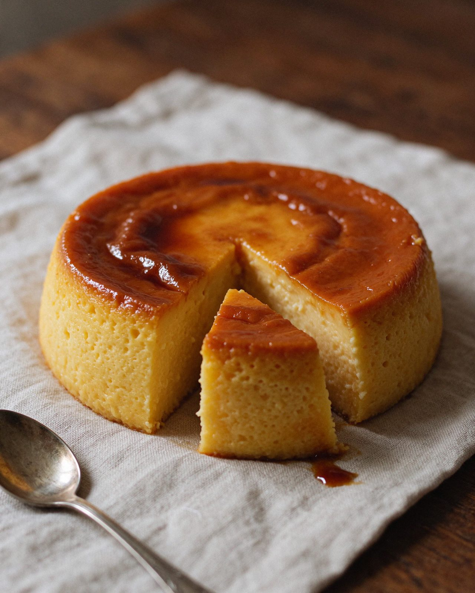
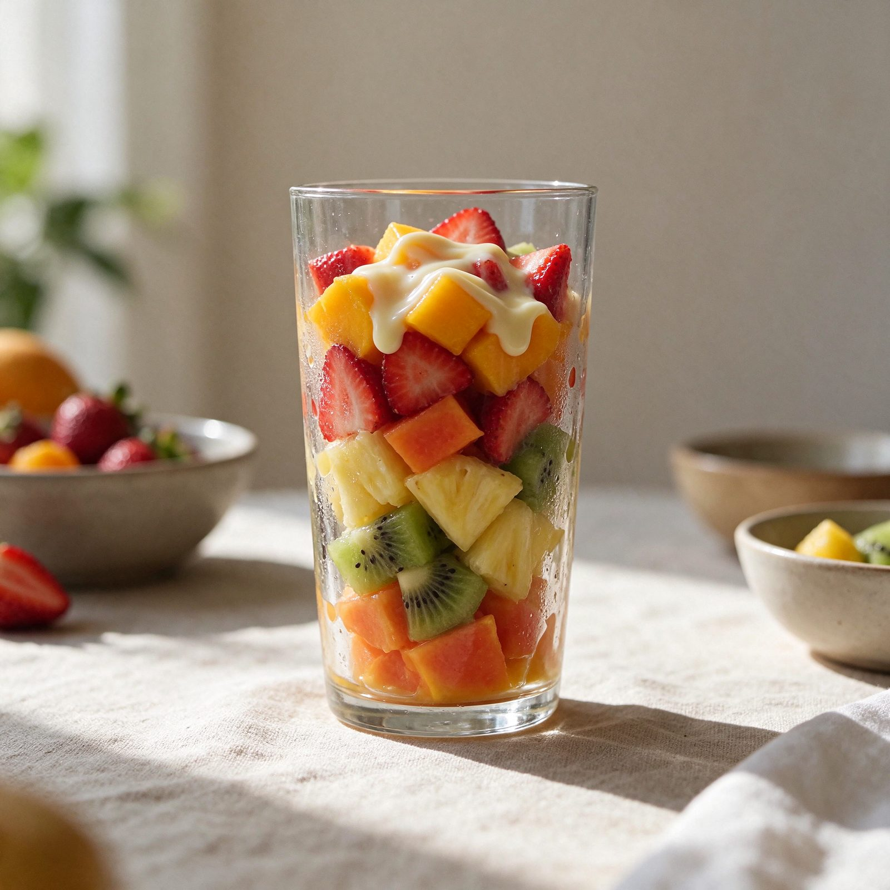
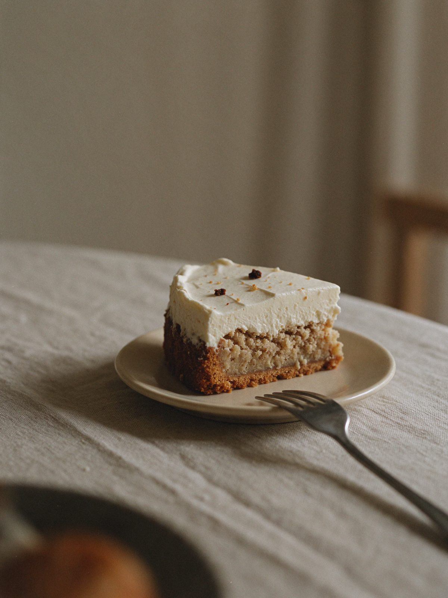
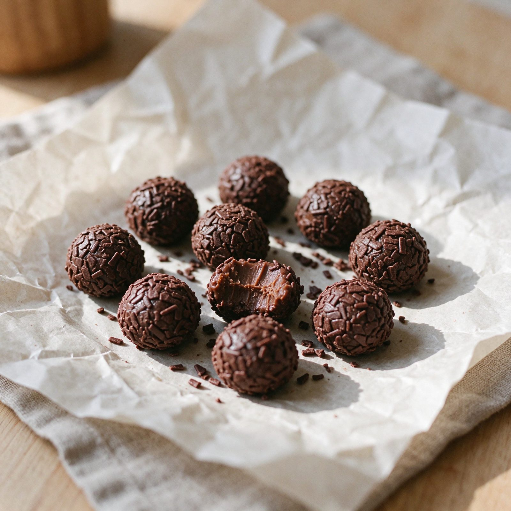

Bolo pudim
Pudim de leite com calda de caramelo, assado em banho-maria. Nasceu como presente de aniversário e virou o pedido mais procurado nas feiras.
Por encomenda, no tamanho da sua mesa.
Doces artesanais feitos em Cuiabá, um pedido por vez.

| Dia | Onde |
|---|---|
| quinta-feira | Praça da Vanguarda |
| sexta-feira | Parque da Nascente, Morada do Ouro |
Três coisas saem quase todos os dias: o pudim, a salada de frutas e os bolos de encomenda.
Pudim de leite com calda de caramelo, assado em banho-maria. Nasceu como presente de aniversário e virou o pedido mais procurado nas feiras.
Por encomenda, no tamanho da sua mesa.
Frutas cortadas na hora, em camadas, com creme e leite condensado. Foi o que levou o nome da Nina para os bairros de Cuiabá, de porta em porta.
Copos individuais ou travessa para a família.

Bolos de aniversário, brigadeiros e doces para mesa de festa. Tudo feito por encomenda, com conversa antes para acertar recheio e data.
Encomendas pelo WhatsApp.

O pai trabalhava com comida: fazia salgados e vendia para sustentar a casa. A Nina cresceu vendo isso, e começou com brigadeiros, feitos primeiro só pelo gosto de fazer.
Quando a necessidade apertou, virou trabalho. O bolo pudim apareceu como presente para o pai, que ama pudim. Ela postou dizendo que era só para a família, e as pessoas começaram a pedir.
Hoje o marido, Robert, sai todos os dias com o cooler pelas ruas de Cuiabá, e a Nina atende as feiras da semana e as encomendas que chegam pelo WhatsApp.

Chame para ver o cardápio da semana, acertar recheio e combinar a entrega em Cuiabá.
Atendimento direto com a Nina.